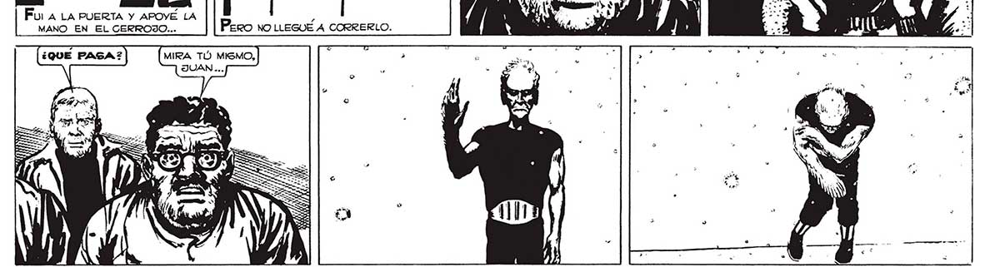
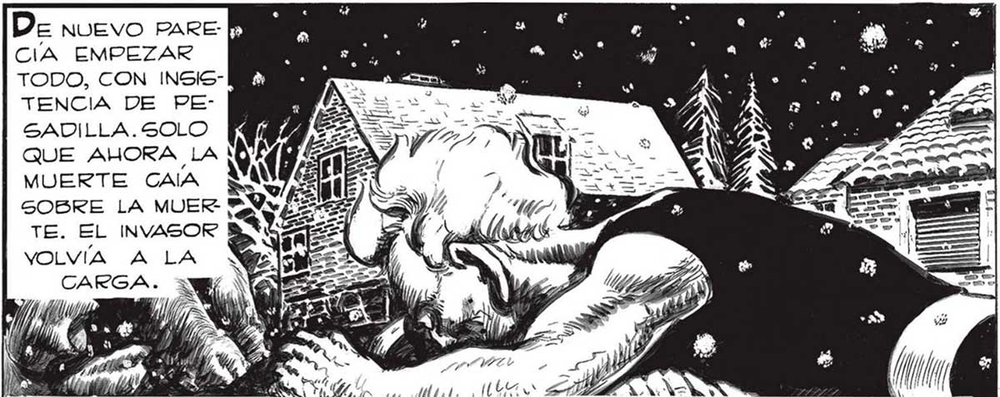

310 Fu ALA PUERTA Y APOYE LA MANO EN EL CERROJO... OTRA VEZ LA NEVADA..LA |LO TOMO SIN A PRONTO, A REVISAR LA CASA NEVADA DE LA MUERTE.. | PROTECCION... -. De NUEVO PARE QUE NO HAYA ABERTURAS. CIA EMPEZAR TODO, CON INSISTENCIA DE PEGADILLA.SOLO Mi > E QUE AHORA LA | db MUERTE CAIA SN SOBRE LA MUER vez TE. EL INVASOR BN VOLVÍA A LA Y Vds ZA 7 Aa é AS) Sen y Put A IA “. ml MAS 5 PH 4 ll ; ÁLií eEsTABA EL “MANO”, MUERTO. Y MUERTA CON EL LA ALEGRÍA DEL REENCUENTRO, DE LO QUE CREAMOS LA VICTORIA SOBRE EL INVASOR...

